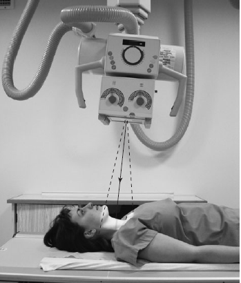

Cervical Spine(AP)
Centering point:Directed to the level of C4, which is approximately the level of the angle of the mandible
15 degrees cephalad. (to match the lordotic curve of the cervical spine, to penetrate the intervertebral disc spaces)

Cassette Size:24cm x 30cm (10 x 12 ins)
Potrait
Exposure Factors:65kVp on
16MaS
FFD:100cm
Bucky/Grid:Moving or Stationary Grid
Filter:No
Collimation:
Centre: C4, collimate to the 18 x 24cm film size
Shutter A: Open so that the light of the collimated field just includes the top of the ear. The light will appear to bend around due to the central ray being angled cephalad
Shutter B: Open to include the soft tissue of the neck laterally
Pathologies:Some pathologies of the cervical vertebrae C3 through to C7
Position of patient and cassette
- Carried out in suspended respiration
-
In general
-
Ensure the removal of artefacts that may superimpose the anatomy of interest
- Only request the patient move into position if the possibility of spinal injury has been ruled out
- Take care to ensure no rotation of either the head, neck or torso.
- If the patient is erect
- Using the upright bucky, position the patient in an AP position. (This allows the patient to rest their back against the bucky, and may help to minimise patient movement)
- Position the midsagittal plane so that it is perpendicular to the IR
- Position the interpupillary line so that it is parallel to the IR (in an erect patient, this will also be parallel to the floor)
- Raise the chin slighlty, so that the line of the occlusal plane superimposes the base of the skull
- If the patient is supine
-
Position the IR patient so that it is either in the table bucky, or is on the barouche posterior to the cervical spine
- Position the midsagittal plane so that it is perpendicular to the IR
-
Position the interpupillary line so that it is parallel to the IR
Critique:
- Positioning
No rotation is evidenced by:-
The spinous processes are seen in the midline of the vertebral bodies
- The pedicles are equidistant from the vertebral body edges
- The mandibular angles are equidistant from the cervical spine
- Correct alignment of the occlusal plane and the base of skull is evidenced by
- The superimposition of the mandible over the base of the skull
- Correct central ray angulation is evidenced by
- The intervertebral disc spaces are seen open
- Area Covered
- Cervical vertebrae C3 through to C7 are visualised
- Collimation
- Centre: C4
- Shutter A: Open to include the base of skull superiorly and approximately T2 inferiorly
- Shutter B: Open to include the soft tissue of the neck laterally
- Exposure
-
Bony trabecular patterns and cortical outlines are sharply defined
- Soft tissues such as an air filled trachea are visualised